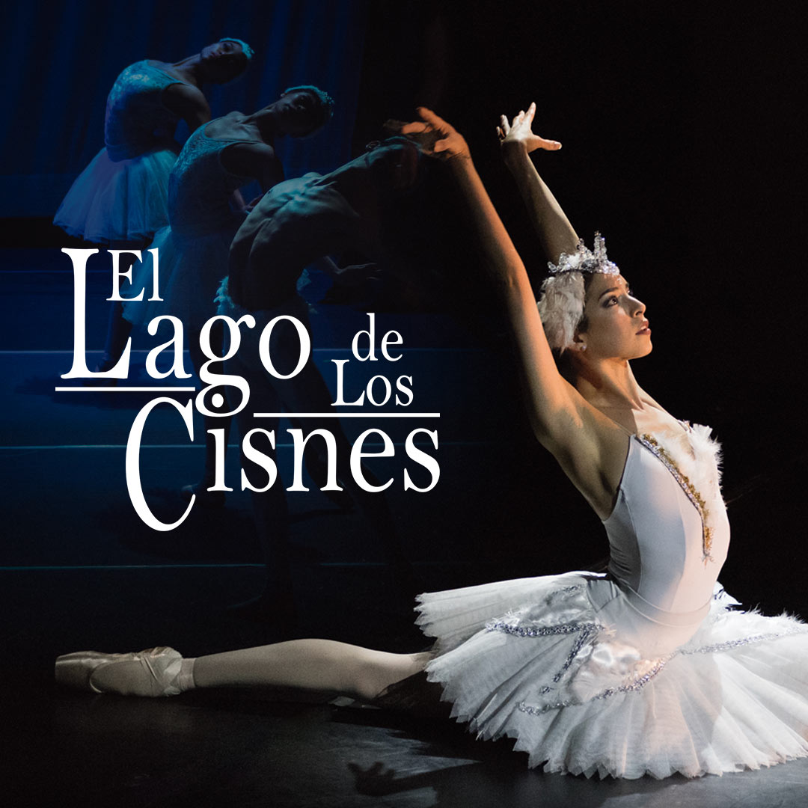
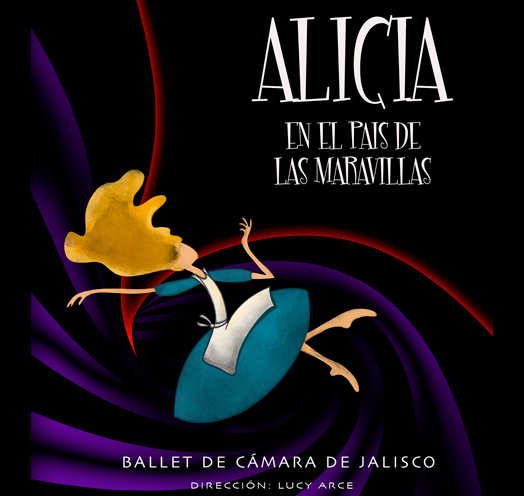
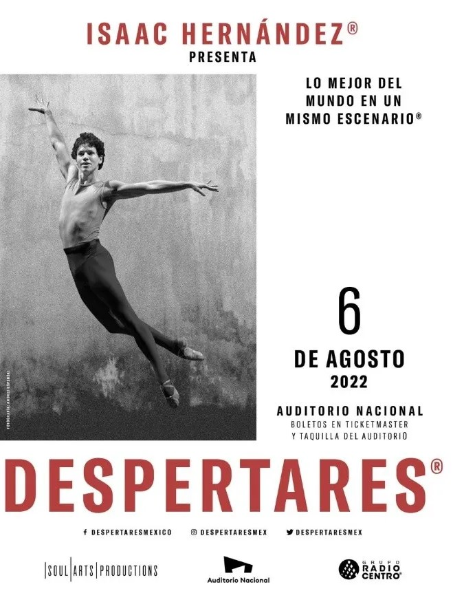

BALLET
Ballet

El Lago de los Cisnes
México, Teatro Tepeyac, Ciudad de México, CDMX.
ㅤ

Unforgetta Ball: Leyendas
México, Teatro de la Ciudad Esperanza Iris, Ciudad de México, CDMX.
ㅤ

Alicia en el Pais de las Maravillas Ballet de Cámara de Jalisco
México, Teatro Diana, Guadalajara, Jalisco.
ㅤ

Isaac Hernández "Despertares"
México, Auditorio Nacional, Ciudad de México, CDMX.
ㅤ